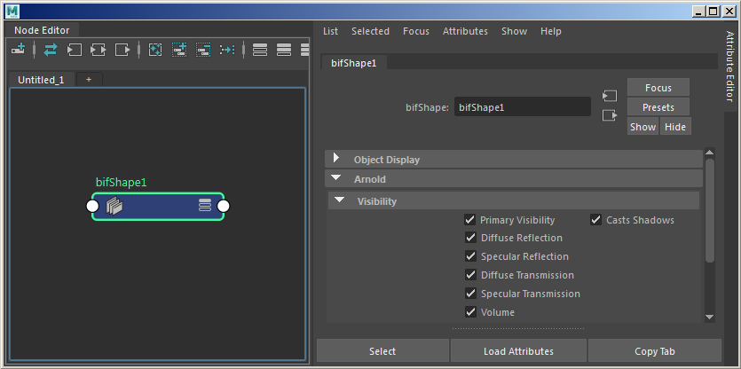
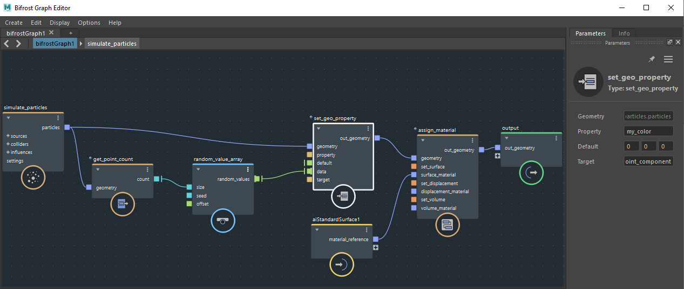

Arnold 的“可见性”(Visibility)属性位于 bifShape 节点下
覆盖某个着色器时（例如，在 Maya 中将某个着色器应用于 bifShape 或 bifrostGraphShape），它将应用于 arnold_bifrost 生成的所有 Arnold 形状。但是，如果要应用的着色器不是体积着色器，则不应将其应用于体积，以便仍然应用图形内体积着色器（或应用 arnold_bifrost 生成的默认通用体积着色器）。如果您创建自己的自定义体积着色器并将其直接指定给 bifShape 或 bifrostGraphShape，则 arnold_bifrost 将无法识别它。在这种情况下，解决方案是仅在图形中应用自定义着色器。
以下 Arnold 节点位于“Bifrost 曲线图编辑器”(Bifrost Graph Editor)中。单击链接以转到相关 Arnold 属性。
| Bifrost 节点 |
|---|
| Arnold_ray_bitmask |
| set_Arnold_geo_settings |
| set_Arnold_mesh_settings |
| set_Arnold_points_settings |
| set_Arnold_strands_settings |
| set_Arnold_volume_settings |
导出到 .ass 文件以便与 kick 结合使用时，必须使用 -l 参数通过 Arnold-Bifrost 程序位置运行 kick，例如：
C:\\solidangle\\mtoadeploy\\2018\\bin\\kick.exe volume_scene.ass -l "C:\\Program Files\\Autodesk\\Bifrost\\Maya2018\\2.0.1.0\\bifrost\\arnold-5.3.0.0" 请注意，当使用 Bifrost 图表体积导出 ass 和 kick 时，无需展开程序。在 MtoA 中，这意味着应禁用 .ass 导出选项中的“展开程序”(Expand Procedurals)。
Arnold-Bifrost 会尝试将每个 Bifrost 特性转换为 Arnold。对于与已知 Arnold 内置参数相对应的内置特性，它们将按此类方式进行转换（而不是转换为用户数据）；但是，遇到的所有其他特性将转换为用户数据，以便着色器和运算符在合适时对其加以使用。
Arnold 中用户数据的类型和范围取决于要渲染的对象类型，例如，点仅支持恒定和统一用户数据，而多边形网格支持恒定、统一、可变和索引用户数据。下表展示了哪些范围对于哪些对象类型受支持，以及哪些类型在整体范围内受到支持：
| 对象类型 | 恒定 | 统一 | 可变 | 索引 |
|---|---|---|---|---|
| 点 | 是 | 是 | ||
| 曲线（Bifrost 股） | 是 | 是 | 是（按分段，也从按控制点自动转化） | 是（需要索引/范围特性） |
| 多边形网格（Bifrost 网格） | 是 | 是 | 是 | |
| 实例 | 是 | |||
| 体积（Bifrost 多分辨率平铺树） | 是 | |||
| 隐式（Bifrost 带符号距离场） | 是 |
以下列出了支持的 Bifrost 数据类型，以及在 Arnold 中转化的等效类型。请注意，在某些情况下，数据会被截断或损失一些精度以适合 Arnold 类型，例如 double 到 float 转化。
| Bifrost 类型 | Arnold 组件类型 | Arnold 类型 |
|---|---|---|
| bool | bool | AI_TYPE_BOOLEAN |
| signed char、signed short int、signed int、signed long int | int32_t | AI_TYPE_INT |
| unsigned char | uint8_t | AI_TYPE_BYTE |
| unsigned short int、unsigned int、unsigned long int | uint32_t | AI_TYPE_UINT |
| float、double | float | AI_TYPE_FLOAT |
| string | AtString | AI_TYPE_STRING |
| char2、uchar2、short2、ushort2、int2、uint2、long2、ulong2、float2、double2 | float | AI_TYPE_VECTOR2 (AtVector2) |
| char3、uchar3、short3、ushort3、int3、uint3、long3、ulong3、float3、double3 | float | AI_TYPE_RGB (AtRGB) |
| char4、uchar4、short4、ushort4、int4、uint4、long4、ulong4、float4、double4 | float | AI_TYPE_RGBA (AtRGBA) |
| char3x3、uchar3x3、short3x3、ushort3x3、int3x3、uint3x3、long3x3、ulong3x3、float3x3、double3x3 | float | AI_TYPE_MATRIX (AtMatrix) |
| char4x4、uchar4x4、short4x4、ushort4x4、int4x4、uint4x4、long4x4、ulong4x4、float4x4、double4x4 | float | AI_TYPE_MATRIX (AtMatrix) |
下面是如何随机化 Bifrost 粒子颜色的示例。
| 要下载场景文件，请单击此处。 |
|---|

random_value_array -> new set_geo_property (color)。颜色是 float3 或 float4 特性（RGB、RGBA）。